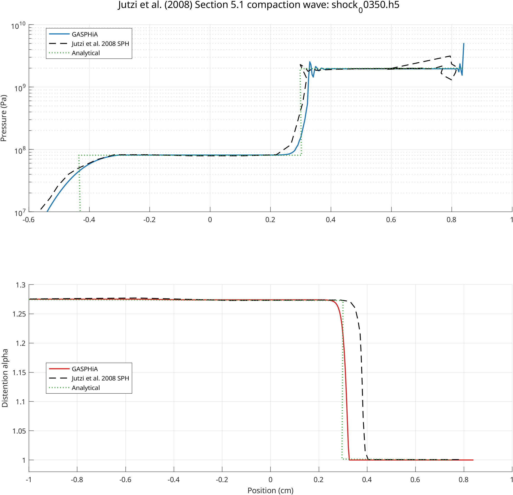

Jutzi 2008 一维 p-alpha 压实波验证
概述
本算例复现 Jutzi et al. (2008) 第 5.1 节的一维多孔铝压实波测试，在固定时刻对比以下物理量在 GASPHiA、论文 SPH 曲线与解析解之间的一致性：
- 压力分布
- 膨胀度
alpha分布
该类测试用于考察 p-alpha 模型在波前结构、压实区厚度、波后压实程度方面的表现。
本次运行以 shock_00350.h5 作为对照帧。提取结果：
- 材料 0 粒子数：
400 - 压力范围：约
1.07e-01 Pa~5.07e+09 Pa - 膨胀度范围：
1.0~1.275
压实波已将材料从初始多孔态推进至近乎完全压实的区域。

---
验证目标
本算例的物理图景如下：右侧移动活塞推动压实波穿过一根初始存在孔隙的多孔铝柱。随着波向前传播，材料从初始膨胀度
\[
\alpha_0 = 1.275
\]
逐渐向更致密状态过渡。
---
运行方式
测试目录：
GASPHiA-Tests/Jutzi2008_Section5_1_PAlphaCompactionWave
执行以下命令启动：
./run_all.sh --source-dir /path/to/GASPHiA --cuda 0
默认流程依次执行：
- 编译并运行
input/gen_input_1d.cpp - 使用当前目录下的
para.cuh编译 GASPHiA - 运行
compaction_wave.ini - 读取
output/shock_00350.h5 - 输出压力 / 膨胀度对比图
需额外注意：本算例的 para.cuh 中预留了一个用于复现实验路径的宏
#define JUTZI2008_5_1_reproduce_need 1
---
结果解读
图形分为上下两部分：
- 上图：压力剖面
- 下图：膨胀度
alpha剖面
每部分均同时绘制三条曲线：
- GASPHiA 计算结果
- 论文 SPH 曲线
- 解析参考曲线
---
实际运行数据
后处理提取的关键指标如下：
| 指标 | 数值 |
|---|---|
| 对照帧 | shock_00350.h5 |
| 材料 0 粒子数 | 400 |
| 压力最小值 | 1.07e-01 Pa |
| 压力最大值 | 5.07e+09 Pa |
| 膨胀度最小值 | 1.0000 |
| 膨胀度最大值 | 1.2750 |
这些数值从两个角度印证了模拟的有效性：
一方面，输出中的 alpha 已覆盖从初始孔隙态到完全压实态的整个范围；另一方面，压力峰值已进入 GPa 量级，说明压实波强度足够，已形成真实压实结构。
---